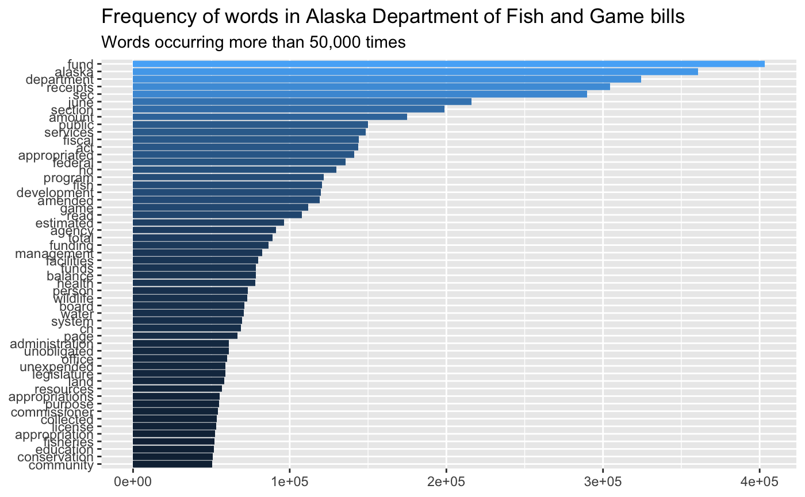
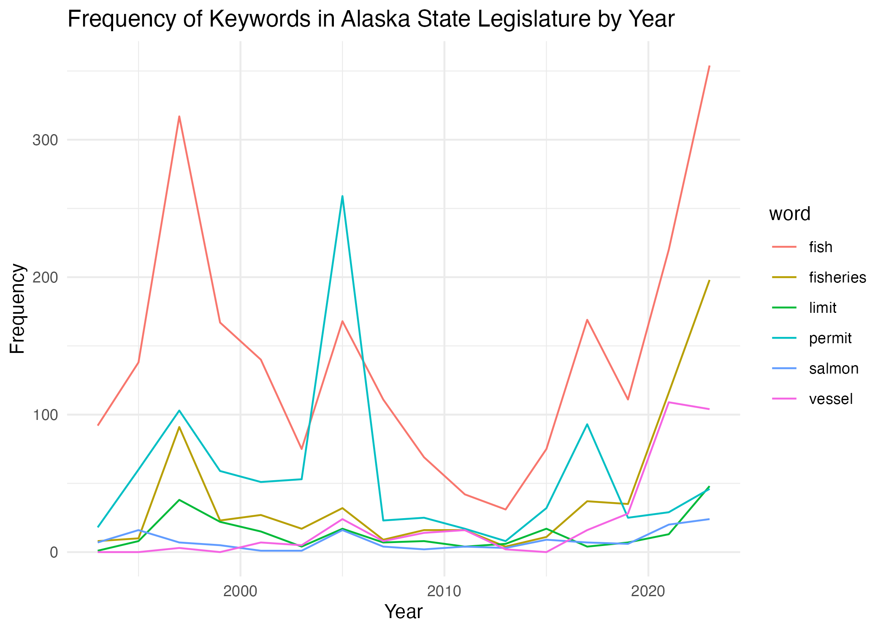

Fish Populations and Fish and Game Regulation in Alaska
Project 2
Author
Emma Campbell, Gus Compton, Harper Lethin
Introduction
Commercial fishing in Alaska is a huge industry, as salmon is the main export product of the state after oil and natural gas. Commercial fishing contributes ~5% of Alaska’s economy, and salmon harvest in Alaska accounts for ~80% of the total North American wild-caught salmon. Commercial fishing regulation changes combined with salmon habitat destruction and climate change leave fishermen and salmon enthusiasts constantly speculating about the effects of regulation changes on salmon populations.
However, commercial salmon data is relatively inaccessible, and analysis of that data is even less accessible. Additionally, there is no existing public data set that examines the Alaska Fish and Game commercial fishing regulations. This project aims to give people a tool to examine the relationships between fish counts, permit/vessel/processor counts, and Fish and Game regulation sentiment analysis.
Methods: Data Wrangling
To obtain the text data from the Alaska legislature on fishing, we scraped the website for all the bills within the “Fish and Game” subject. Using the rvest package and significant help from the Data Lab, we were able to scrape the site and create a data frame with each bill from each year on the subject of Fish and Game.
legis <-read_csv("fish_and_game.csv")
Rows: 428 Columns: 4
── Column specification ────────────────────────────────────────────────────────
Delimiter: ","
chr (3): Name, Link, FULL_TEXT
dbl (1): Legislature
ℹ Use `spec()` to retrieve the full column specification for this data.
ℹ Specify the column types or set `show_col_types = FALSE` to quiet this message.
We then created a function which divided the legis dataset by line and subsetted it into the lines which contained a given keyword. The length of this subset was appended into a new dataframe providing the number of lines containing the keyword for each bill. This was then organized by year into legis_word_longer.
# A tibble: 6 × 6
Legislature Name Link word times_mentioned Year
<dbl> <chr> <chr> <chr> <int> <dbl>
1 33 HB0020A https://www.akleg.gov/basis/B… fish 3 2023
2 33 HB0020A https://www.akleg.gov/basis/B… fish… 3 2023
3 33 HB0020A https://www.akleg.gov/basis/B… perm… 0 2023
4 33 HB0020A https://www.akleg.gov/basis/B… vess… 0 2023
5 33 HB0020A https://www.akleg.gov/basis/B… salm… 0 2023
6 33 HB0020A https://www.akleg.gov/basis/B… limit 0 2023
Salmon data was sourced from the Alaska Department of Fish and Game website, which contains a dataset that includes the following variables per fishing area per year:
Salmon species (Chinook, Chum, Coho, Pink, Sockeye)
Number of fish landed
Total weight of fish landed
Number of issued commercial fishing permits
Number of commercial fishing processor boats
Number of commercial fishing vessels
salmon <-read_csv("salmondata/rawsalmon.csv")
Rows: 1902 Columns: 9
── Column specification ────────────────────────────────────────────────────────
Delimiter: ","
chr (2): Area, Species Name
dbl (7): Year, Number Of Fish (estimated), Landed Weight (lbs), Whole Weight...
ℹ Use `spec()` to retrieve the full column specification for this data.
ℹ Specify the column types or set `show_col_types = FALSE` to quiet this message.
This data was then used to create a shiny app that allows users to compare all variables in the salmon data set with each other, with the ability to isolate by specific salmon species if they are more interested in one than the others. This shiny app was created using the code written above the app in results.
We also compared data on text with fish count and permit count data by creating overlapping time series, to allow for qualitative assessments of potentially significant patterns.
Results
A visualization of the word frequencies across all Alaska Department of Fish and Game bills shows that the words license, fisheries, conservation, and appropriations all appear more than 50,000 times cumulatively. This initial visualization shows the potential of our web-scraped word data frame from the fish and game regulations, and also shows that fish and game regulations appear to mention lots of commercial fishing-related topics.

We also found that the amount of different words used across time is variable, with large spikes in mentions of important fish related terms in 1998, 2005, 2017, and 2022.

The shiny app we created shows
ui <-page_sidebar(sidebar =sidebar(varSelectInput("xvar", "X variable", salmon, selected ="Year"),varSelectInput("yvar", "Y variable", salmon, selected ="num_fish"),checkboxGroupInput("species", "Filter by species",choices =unique(salmon$species), selected =unique(salmon$species) ),hr(), # Add a horizontal rulecheckboxInput("by_species", "Show species", TRUE), ),plotOutput("distPlot"))server <-function(input, output, session) { subsetted <-reactive({req(input$species) salmon |>filter(species %in% input$species) }) output$distPlot <-renderPlot({ p <-ggplot(subsetted(), aes(!!input$xvar, !!input$yvar)) +list(theme(legend.position ="bottom"),if (input$by_species) aes(color = species),geom_point(),geom_smooth(method ='lm') ) p }, res =100)}shinyApp(ui, server)